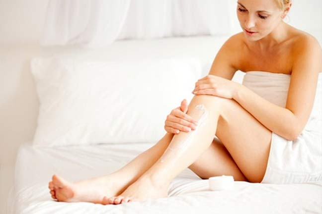

Do：身体保养
不是仅仅抹抹润肤乳液就够了！
如果你已经有了涂抹护体乳的习惯，恭喜你，证明你已经开始关注身体护理了。但周全的身体护理其实包含很多，不仅是去角质、滋润，还有塑形等，这一点也很重要哦~
Do：紧肤修体
是每个追求完美女人的必修课。
随着年龄增长，很多女性身体肌肤的新陈代谢开始缓慢，从而导致皮脂分泌减少，再加上缺乏运动，饮食无规律，脂肪堆积身材变形，出现橘皮组织。它形成的原因很多，遗传、快速胖瘦、烟酒、熬夜、久坐不运动，或女性荷尔蒙激增时，都有可能造成。橘皮组织其实是一种结构改变的脂肪组织。由于脂肪过度囤积，脂肪细胞体积变大，相互挤压，血液循环因而受阻，所以在皮肤表面就会产生凹凸窝状形式的皮肤。
Don’t：身体都有衣服遮盖
不用护理那么麻烦吧！
由于身体不像脸部那样长期曝露在外，因此常常为我们所忽略，但身体肌肤较脸部肌肤要干燥很多。而且，身体肌肤与脸部一样，会随着岁月流逝而开始老化，身体肌肤尤其是腿部、手臂和手肘处很容易出现缺水、干燥和粗糙现象。任何一个时尚的女性都是注重细节的。如果我们穿上漂亮的小礼服去赴宴，却露出背上的痘印，令人尴尬；还有夏日里不可避免的汗流颊背。这些我们都要说“NO”！
Don’t：手部、唇部都是细节部位
冬天干燥时保养一下就可以了不用太在意了！
手是女人的名片。一双娇嫩的手告诉别人你气质优雅、生活优裕。一双干枯粗糙的手，让人联想的是生活操劳艰辛、缺乏保养。手部为什么这么容易苍老呢？一方面是因为手背的皮肤出汗不出油，缺乏皮脂的滋润和保护，所以特别容易缺水干燥；另一方面，护手的观念薄弱，使用碱性过大的清洁剂伤手，没有在洗手后及时涂抹护手霜等等。所以手部保养必不可少。而唇部和眼部一样，是脸部肌肤最脆弱的部分：不仅皮肤薄，而且没有皮脂腺汗腺，既不出油不出汗，所以非常容易干燥和老化。盛夏的阳光、秋冬的寒风、空调环境、身体疲累都会直接影响唇部肌肤的健康，所以我们的嘴唇经常会干到起皮，而且越舔越干！手部和唇部是直接吐露精致品味的细节之处，只有细心呵护，才能真正散发你的精致、优雅魅力。